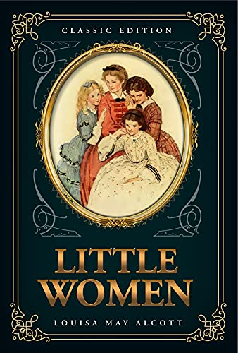

Little Women
Louisa May Alcott
Average Rating:
"The story follows the lives of the four March sisters—Meg, Jo, Beth, and Amy—and details their passage from childhood to womanhood. Loosely based on the lives of the author and her three sisters, [3][4]: 202. It is classified as an autobiographical or semi-autobiographical novel."